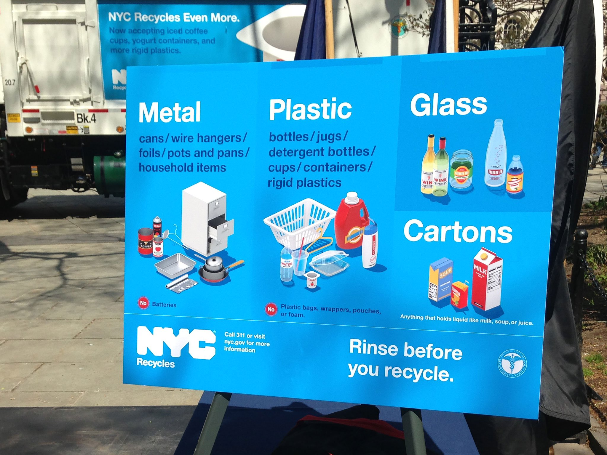

Have you ever wondered if schools actually recycle plastics or do they just throw them out with the rest of the trash? Plastics accumulated in schools are supposedly brought to a local Materials Recovery Facility, but do they really end up there?
Well, as stated by some statistics, many schools actually fail at recycling, and this is one of the reasons for plastic pollution to occur. When people throw out their plastics on the streets, or carelessly leave them somewhere, they end up negatively impacting the environment.
Eventually, all of the plastics end up in the oceans or on landfills which leads to a sudden drop in the population of the marine life. Schools can be blamed for this issue because not much of the staff and students recycle their plastics. They either throw them in the hallways or leave them in their classrooms.
Have you ever wondered if schools actually recycle plastics or do they just throw them out with the rest of the trash? Plastics accumulated in schools are supposedly brought to a local Materials Recovery Facility, but do they really end up there? Well, as stated by some statistics, many schools actually fail at recycling, and this is one of the reasons for plastic pollution to occur. When people throw out their plastics on the streets, or carelessly leave them somewhere, they end up negatively impacting the environment. Eventually, all of the plastics end up in the oceans or on landfills which leads to a sudden drop in the population of the marine life. Schools can be blamed for this issue because not much of the staff and students recycle their plastics. They either throw them in the hallways or leave them in their classrooms.

According to Local Law 19, it is a legal requirement that every schools recycle their wastes, including plastics. But why don’t many schools follow this mandated law? Are they just lazy?
Recycling after yourself is a very easy task and if everyone comes together to address this issue then there can be a positive change. Also, getting rid of the waste in landfills is really expensive.
For instance, NYC itself spends over $300 million yearly just to send the trash to another state (www1.nyc.gov). If schools become more strict about recycling, then the annual cost to get rid of the waste in landfills in NYC could drop.
Additionally, if you look around, a blue bin in schools are for throwing plastics, but most of the times they are filled with garbage or papers, which is not the right bin for these materials.
This is also a problem because if you throw your waste in the wrong bins, they could end up in the wrong facilities which then increases pollution. Another reason why schools contribute to plastic pollution is that in the cafeterias, most foods are served in plastic containers or with plastic utensils.
After students are done eating, they just throw out their trash with the plastics in the same garbage bin. This actually goes against the law requirements because according to the NYC government, every school needs three bins in the cafeterias, one is for plastics, the other is for papers or cardboards and the last one is just for trash.
Most schools usually have one grey bin where everything is thrown inside it, which is the reason why plastic pollution takes place. According to a website (lessismore.org), up to 80% of school waste is actually recyclable and if most schools take actions then there would be a huge impact on the environment.
Although most plastics are not being recycled, there are many ways to solve these issues inside schools. For instance, there are Zero Waste programs, whose goal is to divert recyclable materials from 100 participating Zero Waste schools in five years.
There could also be after school clubs that raise awareness about plastic pollution to the staff and students. In addition, in order to encourage everyone to recycle their plastics, schools could make contests or competitions to see which classes recycle the most in return for memorable awards or trips.
As you can see, schools also play a role in order to maintain a safe and healthy environment.
According to Local Law 19, it is a legal requirement that every schools recycle their wastes, including plastics. But why don’t many schools follow this mandated law? Are they just lazy? Recycling after yourself is a very easy task and if everyone comes together to address this issue then there can be a positive change. Also, getting rid of the waste in landfills is really expensive. For instance, NYC itself spends over $300 million yearly just to send the trash to another state (www1.nyc.gov). If schools become more strict about recycling, then the annual cost to get rid of the waste in landfills in NYC could drop.
Additionally, if you look around, a blue bin in schools are for throwing plastics, but most of the times they are filled with garbage or papers, which is not the right bin for these materials. This is also a problem because if you throw your waste in the wrong bins, they could end up in the wrong facilities which then increases pollution. Another reason why schools contribute to plastic pollution is that in the cafeterias, most foods are served in plastic containers or with plastic utensils. After students are done eating, they just throw out their trash with the plastics in the same garbage bin. This actually goes against the law requirements because according to the NYC government, every school needs three bins in the cafeterias, one is for plastics, the other is for papers or cardboards and the last one is just for trash. Most schools usually have one grey bin where everything is thrown inside it, which is the reason why plastic pollution takes place. According to a website (lessismore.org), up to 80% of school waste is actually recyclable and if most schools take actions then there would be a huge impact on the environment.
Although most plastics are not being recycled, there are many ways to solve these issues inside schools. For instance, there are Zero Waste programs, whose goal is to divert recyclable materials from 100 participating Zero Waste schools in five years. There could also be after school clubs that raise awareness about plastic pollution to the staff and students. In addition, in order to encourage everyone to recycle their plastics, schools could make contests or competitions to see which classes recycle the most in return for memorable awards or trips. As you can see, schools also play a role in order to maintain a safe and healthy environment.